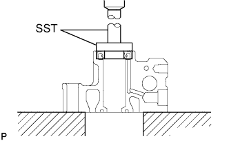
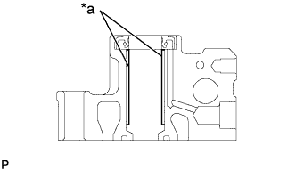
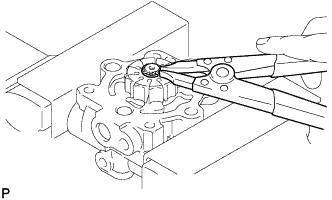
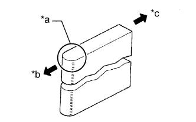
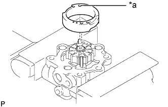
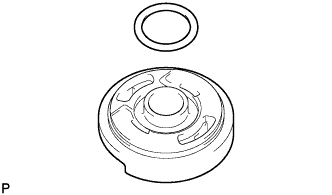
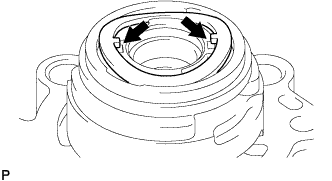
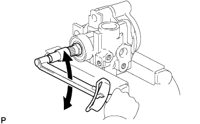

ЛОПАСТНОЙ НАСОС (для моделей с 5L-E) > ПОВТОРНАЯ СБОРКА |
| 1. УСТАНОВИТЕ САЛЬНИК КОЖУХА ЛОПАСТНОГО НАСОСА |
Покройте кромку нового сальника кожуха лопастного насоса универсальной консистентной смазкой.
|  |
При помощи SST и пресса запрессуйте сальник кожуха лопастного насоса в передний кожух лопастного насоса.
| 2. УСТАНОВИТЕ ВАЛ ЛОПАСТНОГО НАСОСА |
|  |
Покройте внутреннюю поверхность втулки в переднем кожухе лопастного насоса жидкостью для механизма рулевого управления с усилителем.
| *a | Жидкость для механизма рулевого управления с усилителем |
Постепенно вставьте вал лопастного насоса со стороны шкива.
| 3. УСТАНОВИТЕ РОТОР ЛОПАСТНОГО НАСОСА |
|  |
Установите ротор лопастного насоса.
При помощи съемника стопорных колец установите новое пружинное стопорное кольцо на вал лопастного насоса.
Смажьте все 10 пластин лопастей насоса жидкостью для механизма рулевого управления с усилителем.
|  |
Установите все пластины лопастей насоса закругленными концами наружу.
| *a | Закругленный конец |
| *b | Наружу |
| *c | Внутрь |
| 4. УСТАНОВИТЕ СТОПОРНОЕ КОЛЬЦО ЛОПАСТНОГО НАСОСА |
|  |
Совместите отверстия стопорного кольца лопастного насоса с 2 стопорными штифтами и установите стопорное кольцо насоса. Нанесенная метка должна быть направлена вверх.
| *a | Нанесенная метка |
| 5. УСТАНОВИТЕ ЗАДНЮЮ БОКОВУЮ ЗАЩИТНУЮ ШАЙБУ ЛОПАСТНОГО НАСОСА |
|  |
Покройте новое кольцевое уплотнение жидкостью для механизма рулевого управления с усилителем и установите его на заднюю боковую защитную шайбу лопастного насоса.
Совместите канавку на стопорном кольце лопастного насоса с канавкой задней защитной шайбы лопастного насоса и установите заднюю защитную шайбу лопастного насоса.
|  |
Установите волнистую шайбу так, чтобы ее выступы попали в прорези задней боковой защитной шайбы лопастного насоса.
| 6. УСТАНОВИТЕ ЗАДНИЙ КОЖУХ ЛОПАСТНОГО НАСОСА |
Установите новую прокладку.
Покройте новое кольцевое уплотнение жидкостью для механизма рулевого управления с усилителем и установите его на задний кожух лопастного насоса.
Закрепите задний кожух лопастного насоса 4 болтами.
| 7. ПРОВЕРЬТЕ СУММАРНЫЙ ПРЕДНАТЯГ |
|  |
Убедитесь, что насос работает плавно, без постороннего шума.
Временно заверните установочную гайку шкива лопастного насоса на вал лопастного насоса.
С помощью динамометрического ключа измерьте крутящий момент.
| 8. УСТАНОВИТЕ КЛАПАН УПРАВЛЕНИЯ РАСХОДОМ |
Смажьте пружину сжатия и клапан управления расходом жидкостью для механизма рулевого управления с усилителем.
Установите пружину сжатия и клапан управления расходом.
Смажьте кольцевое уплотнение жидкостью для механизма рулевого управления с усилителем и вставьте его в штуцер выпускного отверстия.
Установите штуцер выпускного отверстия в передний кожух лопастного насоса.
| 9. УСТАНОВИТЕ ШТУЦЕР КАНАЛА ВСАСЫВАНИЯ |
Смажьте новое кольцевое уплотнение жидкостью для механизма рулевого управления с усилителем и вставьте его в штуцер канала всасывания.
Установите штуцер впускного отверстия на передний кожух лопастного насоса и закрепите его болтом.